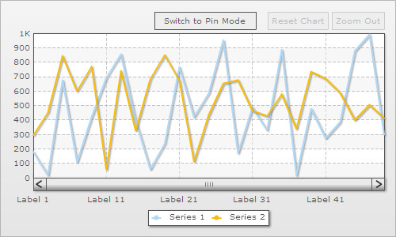

The FusionCharts XT Zoom Line chart is a special type of multi-series line chart that allows analysis of data at both macroscopic and microscopic level. It is meant for plotting large quantities of data, which if plotted on an ordinary line chart will produce indecipherable results. The zoom line chart can easily plot tens of thousands of data points.

At the time of rendering, the zoom line chart displays a macroscopic view of the data. The data is neatly compressed, so that all of it fits into the width of the chart. When the user selects a segment of the line plot by dragging the mouse cursor across the canvas, the selected portion expands to occupy the entire width of the chart. At this point, the scrollbar becomes functional, allowing the user to view the data that precedes or follows the selected section of data. To analyze the data in greater detail, the user can repeat the select and zoom process several times over (until further zooming is not possible). The chart can be restored to its original macroscopic display mode by clicking the 'Reset Chart' button on the toolbar or by selecting 'Reset Chart' from the context menu.
Following are the main features of the FusionCharts XT zoom line chart:
- It provides an excellent macroscopic view of data by neatly compressing it, so that all of the data fits into the width of the chart canvas.
- When the user selects a section of data by dragging the mouse cursor across the canvas, the selected data expands to fill the entire width of the canvas.
- The chart can be switched to pin mode, in pin mode - a ghost of the selected line segment gets imprinted on the canvas, thus enabling the user to compare the pinned segment with the rest of the chart simply by scrolling through. The pinned segment can be dragged to any part of the canvas.
- The zoom line chart supports smart vertical trend lines, which can be made visible either in macroscopic view or at a particular level of microscopic view.
Note: The performance of JavaScript Zoom Line chart is based on the technical capabilities of a browser. A typical JavaScript Zoom Line chart can render up to 10,000 data points without any performance issues.
The zoom line chart is a multi-series chart and works with conventional multi-series XML/JSON. However, it also supports an alternative compact XML/JSON format. The compact XML/JSON format is intended to simplify XMLization/JSONization of large quantities of data. In compact XML/JSON format categories and datasets are defined in the following manner:
<categories>Label 1|Label 2|Label 3|Label 4|Label 5| ... </categories> <dataset seriesName='Series 1' color='AFD8F8'>182|236|17|406|676|... </dataset> <dataset seriesName='Series 2' color='F6BD0F'>294|170|450|120|844|... </dataset>
In order to use this format you need to declare the following attributes in the <chart> element:
<chart compactDataMode='1' dataSeparator='|' . . . >
In the above data, the | character has been used as a separator for categories and datasets, but you can use any character of your choice by specifying it as the value for the dataSeparator attribute.
Limiting the maximum number of visible data labels
By default the chart displays as many data labels as can be accommodated without causing clutter. However, it is also possible to preset the maximum number of data labels that are visible at any given time. The attribute for setting the maximum number of visible data labels is numVisibleLabels and it is declared in the <chart> element.
<chart numVisibleLabels='6' . . . >

numVisibleLabels attribute only limits the number of visible data labels, it has no effect on the number of visible data points.
Vertical divisional lines can be displayed on the chart canvas, above each data label.This feature can be enabled by declaring the showVDivLines attribute of the <chart> element.
<chart showVDivLines='1' . . . >
FusionCharts XT zoom line chart allows configuration of the distance between consecutive dataplots. In the following chart the distance between consecutive dataplots is 5 pixels:
The image shown below - is a variation of the above chart, the distance between consecutive dataplots is set to 25 pixels:
If the chart is in macroscopic view, many data points are skipped in order to accommodate the entire series of data.
To set the distance between consecutive dataplots, you need to declare the pixelsPerPoint attribute in the following way:
<chart pixelsPerPoint='25' . . . >
In order to reduce clutter, you can make anchors visible only when the distance between consecutive data points reaches a certain minimum value. For instance, you can instruct the chart to show anchors only when consecutive data points are 25 pixels apart. If the chart contains plenty of data, then anchors will not be visible in macroscopic view, as the distance between consecutive data points is less than 25 pixels. The anchors become visible only when the chart is zoomed and the distance between consecutive data points increases to 25 pixels or above.
anchorMinRenderDistance attribute is used for specifying the minimum distance (between dataplots) for the anchors to become visible. The attribute is declared in following manner:
<chart anchorMinRenderDistance='15' . . . >
| Anchors get displayed when the distance between dataplots increases to 25 pixels |
By default, toolbar buttons appear above the chart canvas. These can be removed by disabling the drawToolbarButtons attribute.
<chart drawToolbarButtons='0' . . . >
Setting the divisional line interval
In case of a zoom line chart, you can suggest a list of values to be used as divisional line interval. This is done in following way:
<chart divIntervalHints='10,20,50,100' . . .>
The above code instructs the chart to display divisional lines in multiples of either 10, 20, 50 or 100. The chart automatically selects the most appropriate value after verifying whether - the value is lower than the chart's upper limit, it is divisible and there is enough vertical space to render divisional lines using the value as an interval. If all the hints turn out to be invalid, then the chart automatically calculates the divisional line interval.
So, if you've a chart with axis limits 0-100 and you wish to plot divisional lines at 0,50 and 100, you must specify:
<chart divIntervalHints='50' . . .>
However, if you want to plot intervals at 0,200,400,600,1K, you can set:
<chart divIntervalHints='200' . . .>
The chart scale can be made to adapt to the data upon zooming.
This feature can be activated by enabling the dynamicAxis attribute:
<chart dynamicAxis='1' . . . >
Logarithmic scale can be used in place of linear scale for plotting data which has an extremely high range (i.e. enormous difference between maximum and minimum values). To replace the default linear scale with a logarithmic scale set axis='log':
<chart axis='log' . . .>
The default base of the logarithmic scale is 10. The base can be set to any positive number greater than 1 by specifying the logBase attribute.
<chart axis="log" logBase='5' . . . >
Minor logarithmic divisional lines are displayed between consecutive divisional lines. The minimum number of minor logarithmic divisional lines can be set using numMinorLogDivLines attribute.
<chart axis='log' logBase='5' numMinorLogDivLines='2' . . . >
Dynamic axis and divisional line interval hints are not applicable in case of logarithmic scale.
By default the zoom line chart displays all the dataplots in a single screen. However, it is possible to pre select the exact range of dataplots that'll be visible on a single screen at the time of rendering.
displayStartIndex and displayEndIndex attributes are used for preselecting the exact range of dataplots, which are to be made visible when the chart renders. So, for displaying the first 15 dataplots, the attributes are declared in the following manner:
<chart displayStartIndex='1' displayEndIndex='15' . . . >
Similarly, the code for displaying 16th - 25th dataplots is:
<chart displayStartIndex='16' displayEndIndex='25' . . . >
You can add vertical trendlines and zones to a zoom line chart, and also make the visibility of vertical trendlines/zones conditional. By default, all vertical trendlines and zones are visible in both macroscopic and microscopic view. Given below is the code for a default vertical trendline:
<vTrendlines>
<line startIndex='5' endIndex='10' displayValue='Trend 1'/> </vTrendlines>
As shown in the above chart, the default vertical trendline is visible in macroscopic view. By declaring additional attributes, the same vertical trendline can be made visible only when the chart is zoomed to a certain level of microscopic view.
<vTrendlines> <line startIndex='5' displayValue='Trend 1' displayAlways='0' displayWhenCount='10' /> </vTrendlines>
The vertical trendlines is now invisible in macroscopic view, since displayAlways attribute is set to '0'. It becomes visible only when the chart is zoomed to a point, where only 10 (or lesser) dataplots can fit into a single screen:
The displayWhenCount attribute sets the condition for visibility of the vertical trendline. In case of above example, the value of this attribute was set to 10, hence the vertical trendline is visible only if 10, or less than 10 dataplots are displayed on a single screen. The value of the displayWhenCount can be any number, which is greater than 1 and less than the total number of dataplots that are plotted on the chart.
Numerous options are available for customizing the appearance of a zoom line chart. Appearance of chart objects such as scrollbar, toolbar and context menu can be configured with great deal of intricacy. Following table lists some of the cosmetic customization attributes that are exclusive to the zoom line chart:
| Attribute Name | Type | Range | Description |
| palette | Color code | Any (color code without the # prefix) | Specifies a color theme that will be applied throughout the chart. |
| toolbar | Color code | Any (color code without the # prefix) | Sets the color of the toolbar buttons. |
| toolbarButtonFontColor | Color code | Any (color code without the # prefix) | Sets the color of the toolbar font. |
| zoomPaneBorderColor | Color code | Any (color code without the # prefix) | Sets the color of the zoom pane border. |
| zoomPaneBgColor | Color code | Any (color code without the # prefix) | Sets the background color of the zoom pane. |
| zoomPaneBgAlpha | Number | 0-100 | Sets the alpha of the zoom pane. |
| pinLineThicknessDelta | Number | Any number | Sets the thickness of the pinned line when the chart is put to pin line mode. |
| pinPaneBorderColor | Color code | Any (color code without the # prefix) | Sets the color of the pin pane border. |
| pinPaneBgColor | Color code | Any (color code without the # prefix) | Sets the background color of the pin pane. |
| pinPaneBgAlpha | Number | 0-100 | Sets the alpha of the pin pane. |
| toolTipBarColor | Color code | Any (color code without the # prefix) | Sets the color of the tooltip bar, which is displayed alongside the tooltips. |
| mouseCursorColor | Color code | Any (color code without the # prefix) | Sets the color of the mouse cursor. |
| btnResetChartTitle | String | Any string | Replaces the title of the 'Reset Chart' button with provided string. |
| btnZoomOutTitle | String | Any string | Replaces the title of the 'Zoom Out' button with the provided string. |
| btnSwitchtoZoomModeTitle | String | Any string | Replaces the title of the 'Switch to Zoom Mode' button with provided string. |
| btnSwitchToPinModeTitle | String | Any string | Replaces the title of the "Switch to Pin Mode' button with provided string. |
| showToolBarButtonTooltext | Boolean | 0/1 | Enables/disables display of tooltips for toolbar buttons. |
| btnResetChartTooltext | String | Any string | Replaces the default tooltext of the 'Reset Chart' button with provided string. |
| btnZoomOutTooltext | String | Any string | Replaces the default tooltext of the 'Zoom Out' button with provided string. |
| btnSwitchToZoomModeTooltext | String | Any string. | Replaces the default tooltext of 'Switch to Zoom Mode' with provided string. |
| btnSwitchToPinModeTooltext | String | Any string. | Replaces the default tooltext of 'Switch to Pin Mode' button with provided string. |
| zoomOutMenuItemLabel | String | Any string except 'Zoom Out' | Replaces the 'Zoom Out Chart' menu label with provided string. |
| resetChartMenuItemLabel | String | Any string | Replaces the 'Reset Chart' menu item with provided string. |
| zoomModeMenuItemLabel | String | Any string | Replaces the 'Zoom Mode' menu item with provided string. |
| pinModeMenuItemLabel | String | Any string | Replaces the 'Pin Mode' menu item with provided string. |
| toolBarBtnTextVMargin | Number | in pixels | Sets the Vertical margin of toolbar buttons (i.e., padding between text and button border). |
| toolBarBtnTextHMargin | Number | in pixels | Sets the Horizontal margin of toolbar buttons (i.e., padding between text and button border). |
| toolBarBtnHPadding | Number | in pixels | Sets horizontal spacing between toolbar buttons. |
| toolBarBtnVPadding | Number | in pixels | Sets the vertical spacing between toolbar buttons. |